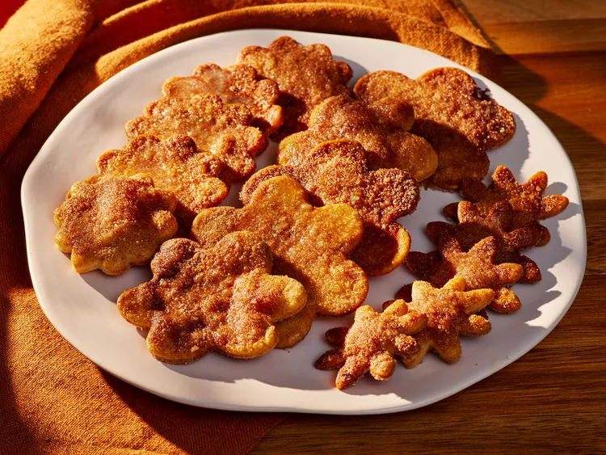

Gather all ingredients. Preheat the oven to 375 degrees F (190 degrees C). Line 2 large rimmed baking sheets with parchment paper; set aside.
Roll premade pie crust to 1/8-inch thickness on a lightly floured work surface, and cut using desired cookie cutter shapes.
Transfer cut-outs to prepared baking sheets, leaving about a 1/2-inch space between each cookie. Repeat with remaining dough, rerolling scraps once.
Whisk together egg and milk in a small bowl until combined. Using a pastry brush, brush the tops of each cookie evenly with egg mixture; discard remaining egg mixture. Whisk together sugar, cinnamon, and salt in a small bowl until evenly combined, sprinkle evenly over brushed cookies.
Bake cookies, one baking sheet at a time, in the preheated oven until the edges and bottoms of cookies just become golden brown, about 15 minutes.
Remove from oven and brush tops of each cookie lightly with melted butter, let cool slightly on baking sheet, about 5 minutes. Serve warm.